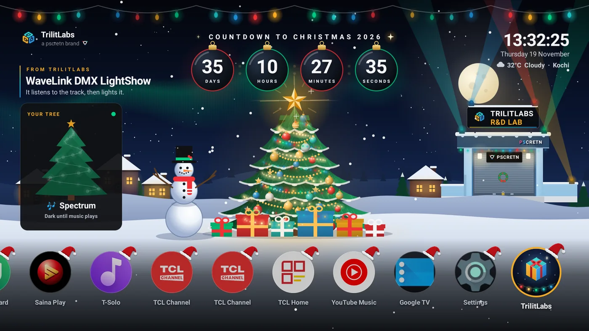
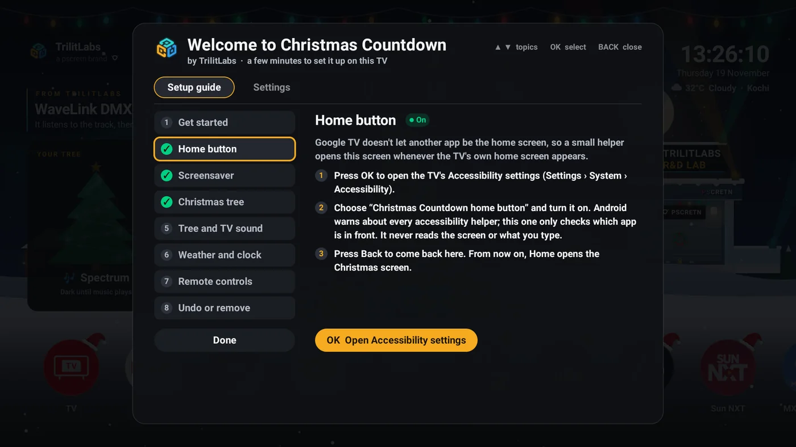

Set up Christmas Countdown
A Christmas home screen for Google TV and Android TV: the countdown to Christmas, the time and weather, your apps along the bottom, and a TrilitLabs Christmas tree that dances to whatever the TV plays. Free, no account, no ads.
Download the APK · 9.0 · 1 MBContents
Install it The first run Home screen Screensaver Using it Christmas tree TV sound Settings Privacy Undo or remove If something goes wrong
01Install it
Christmas Countdown isn't on Google Play, so it's installed from this page. It needs a Google TV or Android TV with Android 6 or newer. It was made on a TCL Google TV.
On the TV, with the Downloader app
- On the TV, open Google Play, search for Downloader (by AFTVnews) and install it.
- Let Downloader install apps: Settings › Apps › Security & restrictions › Unknown sources, then turn on Downloader. If that option is missing, first go to Settings › System › About and press OK on Android TV OS build seven times.
- Open Downloader and type this address, then press Go:
https://pscretn.com/ChristmasCountdown/Christmas_Countdown_9.0.apk - When it has downloaded, choose Install, then Open. Downloader can delete the APK afterwards; you won't need it again.
Or from a USB stick
The TV can't open an APK by itself (on TCL TVs, Media Center only plays videos, music and photos), so this needs a file manager app on the TV.
- On a computer, download the APK and copy it to a USB stick.
- On the TV, install a file manager from Google Play, such as X-plore File Manager or File Commander (both free).
- Let it install apps: Settings › Apps › Security & restrictions › Unknown sources, then turn on the file manager.
- Plug the stick into the TV, open the file manager, open the USB drive and choose Christmas_Countdown_9.0.apk, then Install.
Or from a computer
With Android's platform tools on a computer on the same network: on the TV, turn on USB debugging (and network debugging, if your TV lists it) in Settings › System › Developer options, find the TV's IP address under Network & Internet, then run:
adb connect TV-IP-address:5555
adb install Christmas_Countdown_9.0.apkUpdating? Install the new APK the same way. Your settings, and the Home button helper, stay as they were.
02The first run
Open Christmas Countdown from your apps. The first time, it opens its own setup guide on the TV: topics on the left, the steps on the right, and a tick beside each one that's done. Use ▲ ▼ to choose a topic and OK to do it: the button at the bottom opens the right page of the TV's settings for you.

Everything below is the same as the guide on the TV, with a few extra fixes that need a computer.
03Make it your home screen
Google TV doesn't let another app take over the Home button. So Christmas Countdown comes with a small helper: whenever the TV's own home screen appears, the helper opens Christmas Countdown in its place.
- In the setup guide, choose Home button and press OK. The TV's Accessibility settings open (or find them yourself: Settings › System › Accessibility).
- Under Services, choose Christmas Countdown home button and turn it on.
- Android shows the same warning for every accessibility helper. This one only checks which app is in front. It can't read the screen or what you type, and it only listens to the TV's home screen app.
- Press Back. From now on, Home opens the Christmas screen.
The TV's own home is still there. It's the Google TV tile in the apps row (on other TVs, the name of their home screen). Press Home to come back.
04Screensaver
Christmas Countdown is also a screensaver: the Christmas scene, without the apps, when the TV has been idle.
- In the setup guide, choose Screensaver and press OK to open the TV's screensaver settings. On Google TV they're in Settings › System › Ambient mode; other TVs call it Screen saver or Daydream.
- Choose Christmas Countdown.
Christmas Countdown isn't in the list
Many Google TVs only offer Google's own Ambient mode. Set the screensaver from a computer instead (see Or from a computer to connect):
adb shell settings put secure screensaver_components com.trilitlabs.christmascountdown/.CountdownDreamTo go back to Google's Ambient mode later:
adb shell settings put secure screensaver_components com.google.android.apps.tv.dreamx/.service.Backdrop05Using it
Everything works from the remote.
| Where | What the keys do |
|---|---|
| The apps | ◀ ▶ move along the apps, OK opens one. |
| Your tree | ▲ from the apps goes to the tree (when one is plugged in). ◀ ▶ browse its effects, OK lights the one shown, and OK on the current effect opens all the tree's controls. |
| TrilitLabs tile | At the end of the apps: the setup guide and the settings. |
| Google TV tile | The TV's own home screen. Home brings you back. |
| Anywhere | Back closes a panel. It never takes you off the home screen. |
A short sleigh-bell chime plays when you come back to the home screen (you can turn it off in Settings).
06Christmas tree over USB
Optional. A TrilitLabs Christmas tree plugs straight into the TV's USB port, and its lights then appear on the left of the home screen. No tree? Everything else works as normal.
- Plug the tree's USB cable into the TV.
- The TV asks whether Christmas Countdown may use the USB device: press OK.
- The tree appears on the left, with the effect it's showing. Press ▲ from the apps to reach it.
- OK on the current effect opens its controls: Lights on or off, TV sound, Auto-change (a new effect every few seconds or minutes), Brightness, Speed, Colour and every effect.
After the TV restarts, Android asks once more whether the app may use the tree. Just press OK.
07The tree and TV sound
The tree can dance to whatever the TV is playing. It listens to the TV's own sound output, not a microphone.
- Open the tree's controls (OK on its current effect) and turn TV sound on.
- The first time, Android asks to let Christmas Countdown record audio: allow it. That is the name Android gives to hearing the TV's sound. Nothing is recorded, stored or sent anywhere.
- Pick one of the music effects at the end of the list: Beat Pulse, Sound Meter, Spectrum, Disco and more. With nothing playing, the tree goes dark until the music starts.
Which apps work? YouTube, YouTube Music and most apps. A few, like Prime Video, send their sound straight to the TV's speakers, where no app can hear it.
08Settings
In the TrilitLabs tile, choose the Settings tab. ◀ ▶ or OK change a setting.
| Setting | What it does |
|---|---|
| Weather location | Found from your internet connection. Press OK to search for a city instead, or go back to automatic. |
| Temperature | °C or °F. |
| Clock | 12-hour (with AM/PM) or 24-hour. Until you choose, it follows the TV. |
| Home chime | The sleigh-bell chime when you come back to the home screen. |
| Animation | Reduced: less snow, no stage-light beams and fewer frames a second, for slower TVs. |
| TrilitLabs branding | The TrilitLabs and pscretn logos, product highlights and the lab's signs. Off: festive signs instead. |
09Privacy
No account, no ads, no tracking. Christmas Countdown uses the internet for just two things:
- Weather, from Open-Meteo, for your town.
- Your town, worked out from your internet address by GeoJS, once a day, unless you pick a city yourself.
The TV's sound is analysed on the TV, only while TV sound is on, and only its loudness, beat and a few frequency bands go to the tree, over its USB cable. The Home button helper only checks which app is in front.
10Undo or remove
- Get the TV's own home back: in Settings › System › Accessibility, turn off Christmas Countdown home button.
- Change the screensaver back: choose another one in the TV's screensaver settings, or use the second command under Screensaver.
- Remove the app: Settings › Apps › Christmas Countdown › Uninstall. That removes the helper and the screensaver too.
11If something goes wrong
Home still opens Google TV
The helper is off. In the TrilitLabs tile, the setup guide's Home button topic shows whether it's on; press OK there to turn it on.
“Waiting for your OK” on the tree
Android needs your permission for the tree's USB cable. Press OK on the tree card and say yes.
The tree doesn't move to music
Check that TV sound is on and a music effect is chosen, and that the app playing isn't one that bypasses the TV's sound (like Prime Video).
The weather is for the wrong town
Your internet provider may be in another town. Pick your city under Settings › Weather location.
It feels slow
Set Settings › Animation to Reduced.
“Open the TV's Settings and look for…”
Your TV keeps that setting somewhere the app can't open directly. Open the TV's Settings and look under System.